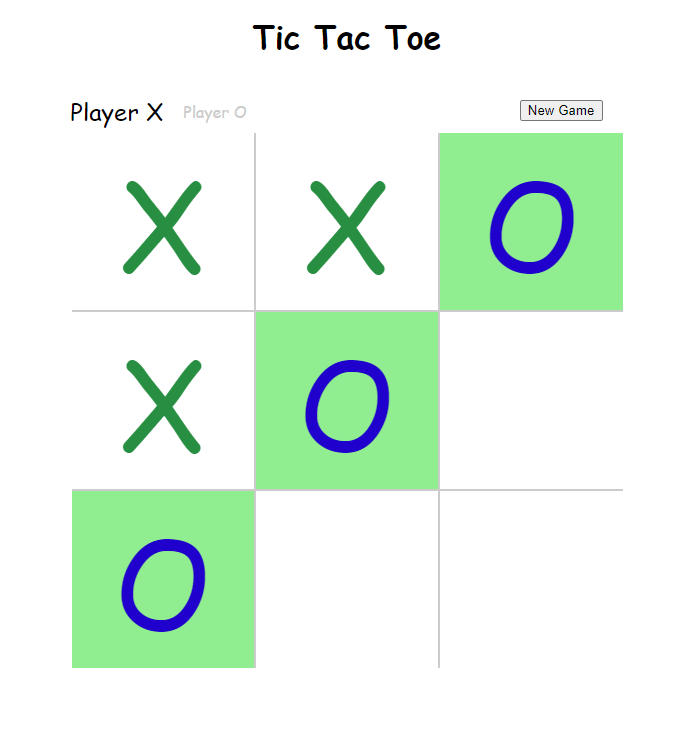

Projects Page
Table of Contents
Clash - A Super Smash Bros Inspired Game

My final project for my grade 11 Computer Science course, I created a fully playable game based on the popular franchise, Super Smash Bros.
The game was coded through python and used thousands of lines of code, including recursive and other functions. The game used 3 sets of pre-made sprites to make up the 3 playable characters I had, along with 3 more sets of sprites for each character’s transformation.
The game had support for three players to play at the same time on a single keyboard, it kept track of score, had custom hitboxes, and felt natural to play.
Tic-Tac-Toe
Using only JavaScript, I was able to create a playable version of the popular children’s game, Tic-Tac-Toe.
The project allows the user to play with one other player and both declares a winner and highlights the winning line.
Adobe Illustrator - Image Recreation Project
At the end of my course on Adobe Illustrator, I recreated a complicated image using only the tools found in the adobe software. No external images were added, and the final image can be scaled however high as needed as the entire thing is a vector image.
This demonstrates my proficiency with the Adobe Illustrator software and is a skill I will use often as I continue through the web development program.